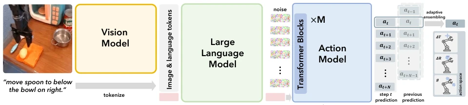
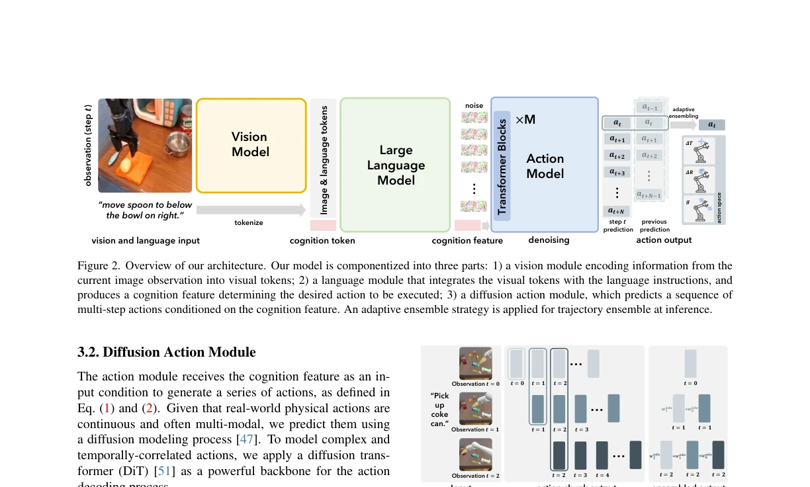
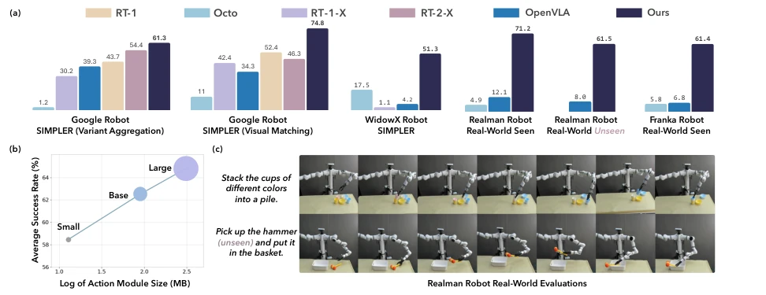

This paper performs a 'decoupling' surgery on VLA models. Previously, large VLA models such as RT-2 and OpenVLA forcibly stuffed continuous action spaces into discrete tokens, akin to asking language models to write code; while functional, the accuracy is poor. CogACT directly implements a dedicated diffusion action module, separating 'cognition' and 'action', with VLM responsible for thinking and DiT for acting. The results are indeed impressive; the 7B model soundly outperforms OpenVLA and RT-2-X in both simulation and real robots, particularly in real-robot experiments where success rates improved by 55%. However, isn't the title of 'foundation model' a bit overstated? After all, it is still fine-tuned based on the OXE dataset; although generalization is good, it remains distant from true general intelligence. Moreover, although the adaptive ensemble strategy is effective, it relies on historical prediction caching, raising questions about potential bottlenecks in real-time performance. In summary, action modeling is indeed more professional, but do not expect it to take over human kitchens tomorrow.
Existing VLA models (e.g., RT-2 [8], OpenVLA [30]) mostly directly reuse pre-trained VLMs for action prediction, typically employing simple action quantization or regression heads. This 'one-size-fits-all' approach ignores the continuity, multimodality, and temporal correlation of robot actions. For instance, RT-2 quantizes 7D actions into discrete tokens, leading to accuracy loss; OpenVLA, although using VLM generation, has a relatively simple action prediction head. These methods exhibit low success rates in complex tasks and struggle to capture multimodal trajectories. CogACT aims to address this pain point by decoupling cognition and action, utilizing diffusion models to better model action distributions, thereby improving task execution success rates and generalization capabilities, particularly in scenarios involving unseen objects and backgrounds.
The overall architecture is divided into three modules: vision, language, and action. The vision module uses DINOv2 and SigLIP to extract image features and serialize them; the language module is based on LLAMA-2, fusing visual tokens with instructions to output a 'cognition token' feature as a condition. The core innovation lies in the action module, which adopts a Diffusion Transformer (DiT) to replace traditional autoregressive or MLP approaches. DiT receives cognition features and noise action sequences, predicting future action blocks through multi-step denoising (default N=15). The training objective is the MSE of noise prediction. During inference, Adaptive Action Ensemble (AAE) is introduced, fusing based on cosine similarity between current and historical predictions to avoid invalid averaging of different mode actions. This design allows VLM to focus on semantic understanding and DiT on fine control, achieving synergy between cognition and action.

Figure 2. Overview of our architecture. Our model is componentized into three parts: 1) a vision module encoding information from the current image observation into visual tokens; 2) a language module that integrates the visual tokens with the language instructions, and produces a cognition feature determining the desired action to be executed; 3) a diffusion action module, which predicts a sequence of multi-step actions conditioned on the cognition feature. An adaptive ensemble strategy is applied for trajectory ensemble at inference.

Figure 3. Illustration of our action ensemble strategy with K = 2 (using the last 2 historical action predictions) as an example. The action ensemble aggregates historical predictions with the current prediction to jointly determine the final action to be executed.
Pretrained on the Open X-Embodiment [48] dataset, evaluated in the SIMPLER [33] simulation environment and on Realman/Franka real robots. Baselines include RT-1 [7], RT-2-X [48], Octo [62], and OpenVLA [30]. In simulation, the 7B CogACT average success rate exceeds OpenVLA by 35% and exceeds the 55B RT-2-X by 18%. In real-robot experiments (Realman), success rates increased by 55%, and performance on Franka was also significantly better than baselines. Ablation studies show DiT has better scalability than MLP, N=15 multi-step prediction is optimal, and adaptive ensemble outperforms fixed-weight ensemble. This demonstrates the effectiveness of the dedicated action module and diffusion modeling.

Figure 1. (a) Success rate (%) comparison of our model against RT-1 [7], RT-1-X [48], RT-2-X [48], Octo [62], and OpenVLA [30] across simulated benchmarks (first thee charts) and real-world evaluations (last three charts), using various robots: Google robot, WidowX robot, Realman robot, and Franka robot. All models are trained on the expansive Open X-Embodiment dataset [48] (expect for RT-1 that trains only on the Google Robot subset) and finetuned on a small amount of data for real robot experiments. (b) Scaling behavior: averaged success rate on SIMPLER [33] with respect to action module size. (c) Examples of Realman Robot executing tasks involving sequentially stacking multiple cups and picking and placing unseen objects.